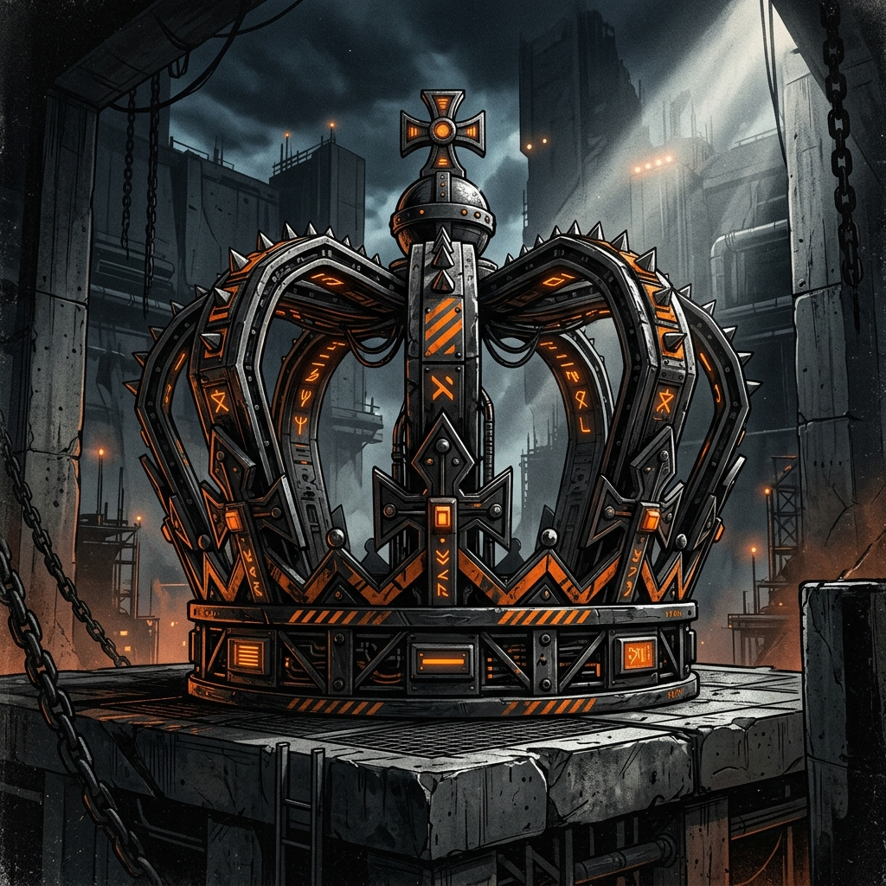

Australia's formal Head of State.

Because Australia is a constitutional monarchy, our formal Head of State is the British Monarch (the King or Queen). However, they do not have absolute power. Their powers are strictly limited by the Australian Constitution.
The Monarch's role is mostly symbolic and constitutional. They do not run the country day to day, nor do they make political decisions or pass laws for Australia.
WHO: The King/Queen
CHOSEN BY: Hereditary line
LOCATION: Resides in the UK
Because the Monarch lives in the United Kingdom, they cannot perform their daily constitutional duties in Australia. Therefore, the Monarch appoints a representative to act on their behalf in Australia. This person is the Governor-General.